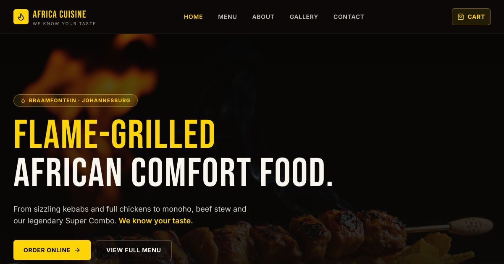
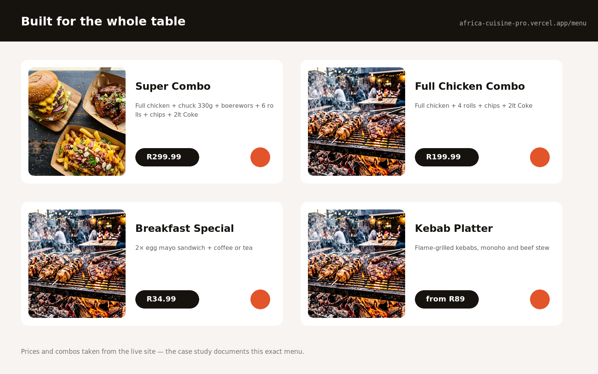

The brief
A landmark restaurant with no digital presence.
Africa Cuisine & Restaurant has been serving Braamfontein for years. Regulars know it; new diners walking past often don't know what's on the menu until they sit down. There was no website, no digital menu, and no way to order without waiting for a server.
The brief: a mobile-first experience that lets diners browse the full menu before they arrive, order and pay at the table, and get the restaurant ranked on search for "Braamfontein restaurant" and "African food Johannesburg."
Discovery & research
Starting with the actual menu.
Research started in the restaurant — photographing every dish, mapping the menu structure, and talking to the kitchen about which items were daily and which were permanent. Then a competitive review of five Joburg restaurant apps to understand the baseline.
- Menu had 60+ items across mains, sides, starters, drinks and specials — needed clear grouping
- Table service was the primary use case — ordering without leaving the table
- Many diners were first-timers — descriptive item names and real food photos were essential
- Payment was via card machine at the table — the PWA needed to hand off cleanly to the server for payment
- Discovery SEO: the restaurant had zero indexed pages — an opportunity to own local search terms
- Connectivity inside the restaurant was variable — offline menu browsing was required
Information architecture
60 dishes, one clear structure.
Card sorting with six diners confirmed five natural menu groupings. The IA kept the ordering journey to three taps maximum from landing on the app to confirming an order.
Home / landing
Restaurant story above the fold. Featured dishes. Quick-access category strip. Location and hours visible without scrolling — for walk-in decisions.
Menu by category
Flame-grilled mains, traditional sides, starters, drinks and daily specials. Each item: name, description, real photo, price. Filter bar stays sticky while scrolling.
Item detail
Full dish description, allergen info, serving size. Add to order with quantity selector. Related items ("goes well with") to increase average order value.
Order summary
Running basket visible via floating button. Summary screen: items, quantities, subtotal. Edit or remove inline. "Notify server" sends the order to the kitchen display.
About & find us
Restaurant story, opening hours, Google Maps embed. Optimised for local search — structured data for the restaurant entity on every page.
Offline mode
Full menu cached after first load. "You're offline" banner when connection drops but the menu still works — no blank screen mid-order.
UX & visual design
Warm, bold and appetite-forward.
The visual language needed to feel as good as the food looks. Rich, warm tones drawn from flame and earth — the actual colours of the food. Real food photography shot on-site during the design phase.

User flows
Five core flows mapped: browse menu, order at table, find the restaurant, view specials, repeat order. Each tested against a 3-tap maximum rule.
Wireframes
Low-fidelity wireframes for all 8 screens. Focus on information density — enough to decide what to order without feeling like a spreadsheet.
Visual design
Deep terracotta #C4462A as primary. Warm cream #FAF3EC for backgrounds. Bold Clash Grotesk for dish names and prices. Real photos — no stock images.
Prototype & test
Clickable prototype tested with four diners inside the restaurant. One redesign of the basket flow after testing showed confusion between "add to order" and "confirm order."
Accessibility
WCAG AA contrast on all text over food photography. Touch targets minimum 44px. Screen reader labels on all images and interactive elements.
SEO build
Restaurant structured data (Schema.org). Location pages targeting "African restaurant Braamfontein" and related terms. Meta descriptions on every page.
Outcomes